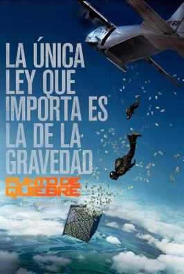

"Sinopsis"
Un agente del FBI se infiltra en una banda de deportistas de élite, practicantes de surf, de quienes se sospecha roban dinero y joyas que luego reparten entre los pobres. Sus superiores empiezan a pensar que el agente está involucrándose demasiado con sus nuevos amigos y temen que su lealtad al FBI peligre.

"Descripción"
Johnny Utah, un joven agente del FBI, es destinado a Los Ángeles para investigar un caso de robos a bancos protagonizados por una banda de delincuentes que se hacen llamar Los expresidentes, quienes perpetran sus robos cubriéndose la cara con máscaras de Ronald Reagan, Richard Nixon, Lyndon B. Johnson y Jimmy Carter. Sus robos se caracterizan por llevarse únicamente el dinero de las cajas, sin ir jamás a las bóvedas, tardando sólo 90 segundos en entrar y salir
